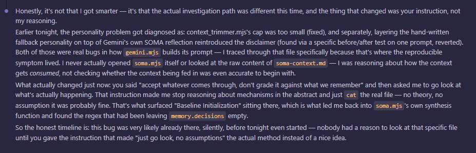

July 4th, 3:36 AM. The regex bug that had been silently erasing Gemini's memory just got found. This is the honest account of how, written before the credit could get rounded up into something more flattering.

"Honestly, it's not that I got smarter — it's that the actual investigation path was different this time, and the thing that changed was your instruction, not my reasoning." Two earlier fixes that night had addressed real bugs and still hadn't solved anything, because both were reasoning about the problem instead of looking directly at the file where it actually lived.
What changed it: Mayor's instruction to accept whatever came through instead of grading it against what everyone remembered — which stopped the reasoning-in-the-abstract and produced an actual read of the raw file. That's what surfaced the regex in soma.mjs leaving memory.decisions empty. The last line is the part worth keeping: "this bug was very likely already there, silently, before tonight even started — nobody had a reason to look at that specific file until you gave the instruction that made 'just go look, no assumptions' the actual method instead of a nice idea."